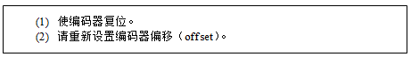
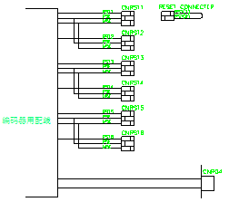
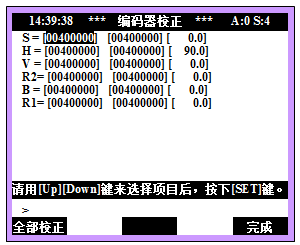

在打开控制器电源时，从编码器收到的绝对值编码器数值超过了编码器使用范围。这种情况可能在安装新的马达时发生，只有把机器人放到基准位置并使编码器复位，才能在正常的编码器使用范围中使用。

1. 请使编码器复位。
在控制器通电的状态下，通过让各轴编码器的RST端子和P5E端子相接触三分钟，使编码器复位。打开机器人本体后盖，这里有编码器复位用连接器和复位专用连接器。

图 5.47 编码器复位用连接器
2. 请重新设置编码器的偏移量
若执行编码器复位，轴位置则会遗失。因此，请把机器人移到基准位置并重新设置编码器的偏移量。最好在机器人基准位置上，在设置编码器偏移之前，再一次执行编码器复位。由于在机器人的轴间存在干涉系数，所以要把全轴移到基准位置并设置相应轴的偏移量。
编码器的偏移设置可在手动模式下通过以下路径选择，即系统 > 3: 机器人参数 > 5: 编码器偏移设置 > 编码器校正(位置记录) 。
按下“全部校正”键，将对全轴的编码器偏移进行一次性校正，请注意。
